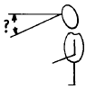
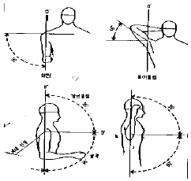
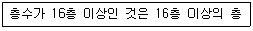

실내건축산업기사 (2004-05-23 기출문제)
1과목: 실내디자인론
1. 질감에 대한 올바른 설명은?
- 질감 선택시 고려해야 할 사항은 스케일, 빛의 반사와 흡수, 촉감 등의 요소이다.
- 매끄러운 재료는 빛을 흡수한다.
- 거친 표면은 색을 더욱 선명하게 보이게 한다.
- 일반적으로 자연적인 것보다 인위적으로 만들어진 것이 내구성, 가공, 생산성 등에서 우수성이 있다.
(정답률: 62%)

2. 실내디자이너에 관한 설명으로 옳지 않은 것은?
- 주어진 조건에 근거하여 객관적인 기준에 따라 디자인하는 태도를 가져야 한다.
- Human scale에 따른 쾌적한 실내공간 조성을 목표로 한다.
- 지나친 독창성이나 유행적인 대안을 추구한다.
- 단지 보기좋은 형태에만 중점을 두면 기능적인 문제가 발생할 우려가 있다.
(정답률: 73%)
3. 전문음식점 실내디자인을 위한 고객(client)과의 인터뷰 시 질문내용으로 적당하지 않은 것은?
- 프로젝트의 예산
- 고객의 의도
- 고객의 사생활
- 프로젝트의 위치,면적
(정답률: 85%)
4. 동선계획시 고려해야할 내용과 가장 거리가 먼 것은?
- 각 동선의 분리
- 동선별 이용빈도
- 재료와 색채
- 출입구의 위치
(정답률: 79%)
5. 업무공간 계획에 있어 아트리움의 이점이 아닌 것은?
- 방문객의 비지니스 활동을 돕기 위한 정보네트워크가 갖춰진다.
- 자연요소의 도입이 근무자의 정서를 돕는다.
- 내부공간의 긴장감을 이완시키는 지각적 카타르시스가 가능하다.
- 전력에너지의 절약이 이루어진다.
(정답률: 40%)
6. 기하학적인 정의로 크기가 없고 위치만 있는 것은?
- 입체
- 면
- 선
- 점
(정답률: 73%)
7. 치수계획에 있어 적정치수를 설정하는 방법은 최소치 +α, 최대치-α 목표치 ±α 인데 이때 α 는 적정치수를 끌어내기 위한 어떤 치수인가?
- 표준치수
- 절대치수
- 여유치수
- 기본치수
(정답률: 58%)
8. 일정한 질서체계에 의해 형성되는 디자인 원리와 가장 거리가 먼 것은?
- 리듬
- 비례
- 통일
- 강조
(정답률: 66%)
9. 실내디자이너나 의뢰인이 공간의 사용목적, 예산등을 종합적으로 검토하여 설계에 대한 희망, 요구사항을 정하는 작업은 디자인프로세스 중 어디에 속하나?
- 설계
- 계획
- 기획
- 감리
(정답률: 53%)
10. 실내디자인의 요소에 관한 설명 중 적합하지 않은 것은?
- 스툴(stool) : 등받이가 없는 의자
- 다운라이트(down light) : 바닥매입형 조명
- 유틸리티(utility) : 다용도실
- 캐스케이드(cascade) : 계단식 폭포
(정답률: 53%)
11. 업무공간계획 중 오픈 오피스(Open office)의 장,단점으로 틀린 것은?
- 공간의 이용성이 높다.
- 소음의 우려가 있다.
- 시설비, 관리비가 많이 든다.
- 업무의 적응성이 높다.
(정답률: 73%)
12. 상점계획에 관한 설명 중 가장 부적당한 것은?
- 매장바닥은 요철, 소음 등이 없도록 한다.
- 대면 판매형식은 판매원 위치가 안정된다.
- 측면 판매형식은 진열면이 협소한 반면 친밀감을 줄 수 있다.
- 레이아웃은 고객에게 심리적 부담감이나 저항감이 생기지 않도록 한다.
(정답률: 73%)
13. 조화에 대한 설명 중 틀린 것은?
- 조화란 전체적인 조립방법이 모순 없이 질서를 잡는 것이다.
- 대비성을 살린 조화는 감정의 온화성, 안정성이 있으나 통합이 어려우므로 피하는 것이 좋다.
- 단순조화는 제반요소를 단순화하여 실내를 조화롭게 하는 것으로 한정된 작은 규모에 적절하다.
- 전통한옥의 경우는 자연감과의 일체성에 의한 조화이다.
(정답률: 69%)
14. 스파클(sparkle),실루엣(silhouette),그레이징(grazing), 월워싱(wall washing)의 공통점은?
- 창문처리방법
- 조명연출방법
- 동선처리방법
- 투시도표현기법
(정답률: 83%)
15. 판매공간의 동선에 관한 다음 기술 중 가장 적절하지 않은 것은?
- 고객동선은 고객의 움직임이 자연스럽게 유도될 수 있도록 계획한다.
- 고객동선은 고객이 원하는 곳으로 바로 접근할 수 있도록 가능한한 짧게 계획한다.
- 판매원 동선은 가능한한 짧게 만들어 일의 능률이 저하되지 않도록 한다.
- 판매원 동선은 고객동선과 교차하지 않도록 계획한다
(정답률: 79%)
16. 동선에 관한 설명으로 옳지 않은 것은?
- 동선이란 사람이나 물건이 이동하는 궤적을 연결하여 만든 긴 공간 개념의 선을 말한다.
- 동선은 통행량, 동선의 방향, 교차 및 이동시의 동작 등을 고려하여 계획한다.
- 각 실내에서의 동선은 융통성이 없으므로 조절하기 어렵다.
- 동선계획의 요점은 특수한 경우를 제외하고는 짧고 직선적이어야 한다.
(정답률: 75%)
17. 건축화조명 방식에 대한 설명 중 옳지 않은 것은?
- 코니스 조명: 벽면의 상부에 위치하여 모든 빛이 아래로 직사하도록 하는 조명방식이다.
- 밸런스 조명: 창이나 벽의 커튼 상부에 부설된 조명이다.
- 코브조명: 반사광을 사용하지 않고 광원의 빛을 직접 조명하는 방법이다.
- 캐노피 조명: 사용자의 얼굴에 적당한 조도를 분배하기 위해 벽면이나 천장면의 일부를 돌출시켜 조명을 설치한다.
(정답률: 60%)
18. 실내디자인의 요소 중 기본이 되는 벽체의 기능에 대한 설명으로 틀린 것은?
- 실내공간을 형성하는 주요 기본구성요소중 인간의 시각적, 촉각적 요소와 가장 관계가 밀접하다.
- 수직적 요소로서 수평방향을 차단하여 공간을 형성한다.
- 외부로부터의 방어와 프라이버시의 확보 역할을 한다
- 인간의 시선이나 동선을 차단하고 공기의 움직임, 소리의 전파, 열의 이동을 제어한다.
(정답률: 64%)
19. 모듈(module)에 대한 설명 중 올바른 것은?
- 건축, 실내가구의 디자인에서 종류, 규모에 따라 계획자가 정하는 상대적, 구체적인 기준의 단위이다.
- 공간크기를 계량하는 기본으로 피보나치 수열을 인간치수에 적용시킨 단위이다.
- 미터법과 같은 절대적, 추상적 단위로 건축, 가구 디자인 등에 응용된다.
- 모듈을 설정할 경우 설계기간이나 시공기간이 증가하며 생산비용 또한 증가한다.
(정답률: 25%)
20. 일반적인 부엌의 작업순서에 따른 작업대 배치로서 가장 알맞은 것은?
- ①-②-③-④-⑤
- ②-④-③-⑤-①
- ③-①-②-⑤-④
- ④-⑤-②-①-③
(정답률: 81%)
2과목: 색채 및 인간공학
21. 색채의 중량감에 관한 설명 중 잘못된 것은?
- 색의 3속성 중 명도의 효과가 지배적이다
- 명도와 채도가 높을수록 가벼워 보인다
- 색채의 중량감이나 온도감은 자연의 현상이나 사물의 연상에서 온다
- 색상의 차이에서만 중량감을 크게 느낄 수 있다
(정답률: 54%)
22. 일반적인 환경하에서 계단설계시 가장 알맞은 각도는?
- 10∼15°
- 15∼20°
- 20∼25°
- 30∼45°
(정답률: 21%)
23. 다음 중 실내조명의 추천반사율(IES)을 80∼90% 정도로 유지해야 효과적인 부분은?
- 바닥
- 천정
- 창문
- 가구
(정답률: 58%)
24. 오스트발트 색채조화론에 의한 조화법칙 중 틀린 것은?
- 색상이 동일하고 색의 기호가 다르면 두 색은 조화하지 않는다 (예 : 5ge-5ne)
- 색상이 달라도 색의 기호가 동일한 두 색은 조화한다(예 : 5ne-8ne)
- 색의 기호 중 앞의 문자가 동일한 두 색은 조화한다(예 : ga-ge)
- 색의 기호 중 앞의 문자와 뒤의 문자가 같은 색은 조화한다 (예 : la-pl)
(정답률: 55%)
25. 사람이 짙은 색 옷을 입으면 얼굴이 희게 보이고, 밝은 색 옷을 입으면 얼굴이 검게 보이는 현상은?
- 명도대비
- 채도대비
- 색상대비
- 계시대비
(정답률: 64%)
26. 다음 중 동작경제(motion economy)의 원칙과 맞지 않는 것은?
- 양손의 동작을 동시에 한다.
- 동선을 최소화한다.
- 물리적 조건을 활용한다.
- 기본동작을 많이 도입한다.
(정답률: 47%)
27. 소음이 청력에 영향을 미치는 요인이 아닌 것은?
- 소음의 고저 주파수
- 개인적인 감수성
- 소음의 강약
- 소음의 속도
(정답률: 24%)
28. 추상체와 간(한)상체가 동시에 함께 활동하여 색의 판단을 신뢰할 수 없는 상태를 무엇이라 하는가?
- 박명시
- 명소시
- 항상시
- 암소시
(정답률: 40%)
29. 색의 진출, 후퇴 및 확대, 축소의 심리학적 작용을 설명한 것 중 틀린 것은?
- 따뜻한 느낌을 주는 색상은 일반적으로 팽창하여 보인다
- 청색계통의 색상은 후퇴하여 보인다
- 명도가 높은 색은 후퇴하여 보인다
- 명도가 낮은 색은 수축되어 보인다
(정답률: 62%)
30. 산업계에서 색채를 잘 사용하여 생산량을 증가시키려고 한다. 다음 중 가장 합당한 경우는?
- 여러 색상의 표식을 만든다
- 기계 등에 명시성이 높고, 명쾌한 색을 사용한다
- 채도가 낮은 색을 주로 사용한다
- 강조색과 환경색을 동일색으로 한다
(정답률: 64%)
31. 섰을 때 눈에서 수평선을 기준으로 한 정상적 하향 시각은?

- 20 ± 2.5°
- 30 ± 2.5°
- 45 ± 2.5°
- 60 ± 2.5°
(정답률: 42%)
32. 앉아 있을 때 가장 큰 힘이 작용하는 제어장치의 손잡이 위치는?
- 어깨의 높이
- 가슴의 높이
- 배꼽의 높이
- 팔꿈치 높이
(정답률: 59%)
33. 고호, 쇠라, 시냑 등 인상파 화가들의 표현기법과 관계 깊은 것은?
- 계시대비
- 동시대비
- 회전혼합
- 병치혼합
(정답률: 44%)
34. 자극이 과다한 경우의 결과에 대한 설명 중 잘못된것은?
- 당면한것만 처리한다.
- 올바른 반응을 못한다.
- 중요한 정보를 놓친다.
- 정보 수용량이 많아진다.
(정답률: 48%)
35. 다음 그림은 어느부위의 관절운동을 보여주는가?

- 어깨
- 팔
- 가슴
- 몸통
(정답률: 71%)
36. 다음 색채조화론 중 색입체로서 오메가(ω)공간을 설정한 조화이론은?
- 오스트발트의 조화론
- 무운· 스펜서의 조화론
- 쟈드의 조화론
- 오스트발트와 쟈드의 조화론
(정답률: 44%)
37. 인간-기계시스템(man-machine system)을 설계할 때 특히 주의해야 할 점은?
- 정적(Static)으로 측정한 인간공학적 측정 결과를 동적 움직임을 고려하지 않고 적용하는 것
- 진동상태를 고려해서 인간의 시력을 측정하는 것
- 사무작업자의 호흡능력을 고려해서 적성배치를 하는 것
- 자동차의 진동과 차의 속도 관계를 고려하는 것
(정답률: 39%)
38. 다음 중 고온 스트레스에 의한 질병이 아닌 것은?
- 열경련
- 저체온증
- 열부종
- 탈수증
(정답률: 76%)
39. 빨강색 바탕 위의 주황색과 노랑색 바탕 위의 주황색이 서로 다르게 보이는 가장 큰 대비 현상은?
- 채도대비
- 색상대비
- 보색대비
- 면적대비
(정답률: 58%)
40. P.C.C.S.표색계의 톤(tone) 분류법과 관련이 없는 것은?
- 명도, 채도를 포함하는 복합개념이다
- 각 색상마다 12톤으로 분류하였다
- 일본 색채연구소에서 만든 분류법이다
- 어두운 톤 : dull로, 기호로는 d로 표기한다
(정답률: 28%)
3과목: 건축재료
41. 일반적으로 철, 크롬, 망간 등의 산화물을 혼합하여 제조한 것으로 염색품의 색이 바래는 것을 방지하고 채광을 요구하는 진열장 등에 이용되는 유리는?
- 자외선흡수유리
- 망입유리
- 복층유리
- 유리블록
(정답률: 52%)
42. 금속재료의 방식방법 중 틀린 것은?
- 가능한 한 상이한 금속은 인접, 접촉시켜 사용하지 말 것.
- 큰 변형을 준 것은 가능한 한 담금질을 하여 사용할 것.
- 표면을 청결하게 하고, 가능한 한 건조상태로 유지할 것.
- 기밀 또는 수밀성 보호피막을 만들거나 방부 보호피 막을 실시할 것
(정답률: 60%)
43. ALC에 관한 설명 중 올바른 것은?
- ALC는 동일한 물시멘트비일 경우 보통콘크리트에 비해 강도가 높다.
- ALC는 보통의 시멘트제품보다 강한 알칼리성을 띤다.
- ALC는 현장에서 절단 및 가공을 할 수 없다.
- ALC는 흡수성이 크기 때문에 지반에 접하는 부분에서의 사용은 피하는 것이 좋다.
(정답률: 35%)
44. 일명 부석(浮石)이라고 하며 화산에서 분출된 마그마가 급냉각하여 응고된 다공질로 경량골재나 내화재로 사용되는 석재는?
- 화산암
- 석회암
- 화강암
- 대리석
(정답률: 43%)
45. 시멘트의 분말도와 관련한 설명으로 옳지 않은 것은?
- 시멘트의 분말도 시험법으로는 체분석법, 피크노메타법, 브레인법 등이 있다.
- 분말도는 시멘트의 성능 중 블리딩, 초기강도 등에 크게 영향을 준다.
- 시멘트 분말이 미세할수록 물과 접촉하는 시멘트의 비표면적이 작아지므로 수화작용이 늦어 진다.
- 과도하게 미세한 것은 풍화되기 쉽고 또한 사용 후 균열이 발생하기가 쉽다.
(정답률: 52%)
46. 건축용 접착제에 기본적으로 요구되는 성능과 가장 관계가 먼 것은?
- 경화시 체적수축 등의 변형을 일으키지 않을 것
- 취급이 용이하고 사용시 유동성이 없을 것
- 장기 하중에 의한 크리프가 없을 것
- 진동, 충격의 반복에 잘 견딜 것
(정답률: 44%)
47. 내알칼리성은 약하나 전기절연성, 내수성이 우수하며 덕트, 파이프, 접착제 등에 사용되는 열경화성 수지는?
- 페놀수지
- 염화비닐수지
- 초산비닐수지
- 폴리에틸렌수지
(정답률: 46%)
48. 콘크리트 골재에 요구되는 성질로 옳지 않은 것은?
- 유해량의 먼지, 흙, 유기불순물 등을 포함하지 않을 것
- 잔골재의 염분허용한도는 0.04%(NaCl) 이하일 것
- 골재의 입형은 세장하고, 표면이 매끈할 것
- 입도는 조립에서 세립까지 연속적으로 균등히 혼합되어 있을 것
(정답률: 59%)
49. 석고보드의 일반적인 특징에 대한 설명으로 옳지 않은 것은?
- 수축률이 크고 단열성이 낮다.
- 방화성능 및 보온성이 우수하다.
- 흡습되면 강도, 강성이 저하된다.
- 부식이 안되고 충해를 받지 않는다.
(정답률: 46%)
50. 목재의 방부제에 요구되는 성질과 가장 관계가 먼 것은?
- 목재에 침투가 잘될 것
- 금속을 부식시키지 않을 것
- 방부처리 후 표면에 페인트칠을 할 수 있을 것
- 목재의 인화성, 흡수성 증가가 있을 것
(정답률: 65%)
51. 알루미늄에 대한 기술 중 옳지 않은 것은?
- 비중이 비교적 작고 압연, 인발 등의 가공성이 좋다.
- 열ㆍ전기의 전도성 및 반사율이 뛰어나다.
- 대기중에서 순도가 높은 것은 빨리 부식하나 순도가 낮은 것은 내식성이 크다.
- 내알칼리성이 부족하기 때문에 모르타르, 콘크리트 등과 같은 알칼리질 재료와의 부착을 피한다.
(정답률: 62%)
52. 점토광물 중 적갈색으로 내화성이 부족하고 보통벽돌, 기와, 토관의 원료로 사용되는 것은?
- 석기점토
- 사질점토
- 내화점토
- 자토
(정답률: 27%)
53. 고온소성의 무수석고를 특별한 화학처리를 한 것으로 킨스시멘트라고도 불리우는 것은?
- 경석고 플라스터
- 혼합석고 플라스터
- 보드용 플라스터
- 마그네시아 시멘트
(정답률: 63%)
54. 미장재료 중 돌로마이트 플라스터에 관한 설명으로 틀린것은?
- 공기 중의 탄산가스와 결합하여 경화한다.
- 미장 후 6~12개월은 알칼리성으로 유성페인트마감을 할 수 없다.
- 원칙적으로 풀 또는 여물을 사용하지 않고 물로 연화 하여 사용한다.
- 분말도가 미세한 것이 시공이 어렵고 균열의 발생도 크다.
(정답률: 26%)
55. 목재를 건조시키는 목적과 가장 관계가 먼 것은?
- 중량의 경감
- 강도의 증진
- 도장의 용이
- 내화성의 강화
(정답률: 37%)
56. 다음 중 마루판으로의 사용이 가장 적당하지 않은 것은?
- 코펜하겐 리브
- 플로링 보드
- 파키트 블록
- 파키트 패널
(정답률: 48%)
57. 합성수지질 접착제 중 냉압하면 포르말린 냄새가 나고, 목공용에 적당하여 내수합판에 주로 사용되는 것은?
- 요소수지 접착제
- 에폭시수지 접착제
- 실리콘수지 접착제
- 비닐수지 접착제
(정답률: 43%)
58. 수분 상승으로 인하여 콘크리트의 표면에 떠올라서 얇은 피막으로 되어 침적한 물질은?
- 레이턴스(laitance)
- 블리딩(bleeding)
- 분리(segregation)
- 침강(settlement)
(정답률: 32%)
59. 얇은 강판에 마름모꼴의 구멍을 연속적으로 뚫어 그물처럼 만든 것으로 천장, 벽 등의 미장 바탕에 쓰이는 것은?
- 메탈라스
- 메탈 폼
- 루프 드레인
- 조이너
(정답률: 74%)
60. 도료와 적당한 사용장소의 연결관계가 가장 옳지 않은 것은?
- 수성페인트 - 알칼리성바탕
- 유성페인트 - 철재 및 목재바탕
- 광명단 - 철재바탕
- 멜라민수지도료 - 목재바탕
(정답률: 12%)
4과목: 건축일반
61. 로마시대에 다양한 업무를 보는 많은 사람들을 수용하기 위해 설계된 건축물로서 행정관청 등으로 사용되었으며 초기 그리스도교 건축물에 영향을 미친 건축물은?
- 개선문
- 바실리카
- 도무스
- 콜롯세움
(정답률: 53%)
62. 건축물에 설치하는 방화벽의 구조에 관한 기준 중 부적합한 것은?
- 내화구조로서 홀로 설 수 있는 구조이어야 한다.
- 방화벽의 양쪽 끝과 윗쪽 끝을 건축물의 외벽면 및 지붕면으로부터 0.5m 이상 튀어나오게 하여야 한다.
- 방화벽에 설치하는 출입문의 너비 및 높이는 각각 2.5m 이하로 하여야 한다.
- 방화벽에 설치하는 출입문에는 을종방화문을 설치하여야 한다.
(정답률: 42%)
63. 철골 구조의 특성에 관한 설명 중 틀린 것은?
- 수평력에 대해 강하다.
- 철근콘크리트구조물 보다 자체중량이 크고 시공에 많은 기일이 요구된다.
- 좌굴에 약한 단점이 있다.
- 고층건축 또는 큰 간사이구조의 대규모건축에 이용된다.
(정답률: 39%)
64. 목구조의 각 구성재에 대한 설명으로 적합치 못한 것은?
- 샛기둥 : 가새의 옆휨을 방지하는데 유효하다.
- 인방 : 기둥과 기둥에 가로대어 창문틀의 상하벽을 받고 하중을 기둥에 전달하며, 창문틀을 끼워대는 뼈대가 되는 것이다.
- 창문선 : 창문틀 주위의 벽과의 마무림과 장식을 위하여 둘러대는 누름대이다.
- 처마도리 : 동자기둥ㆍ대공이 상당히 높게 될 때에 낮은 동자기둥과 동자기둥 사이에 이중으로 걸친 보이다.
(정답률: 45%)
65. 철근콘크리트 기둥의 띠철근의 수직간격에 대한 기술 중 틀린 것은?
- 주근지름의 20배 이하
- 띠철근지름의 48배 이하
- 기둥 단면의 최소치수 이하
- 종방향 철근지름의 16배 이하
(정답률: 29%)
66. 서양 건축사에서 시대구분에 의한 양식과 건축물의 배열이 잘못된 것은?
- 비잔틴양식 - 성 소피아 성당, 성 비탈레 성당
- 고딕양식 - 피사 성당, 템피에토
- 르네상스 양식 - 루브르 궁, 성 안드레아 성당
- 로마 양식 - 카라칼라 욕장, 판테온
(정답률: 8%)
67. 서양건축사의 시대적 순서가 가장 알맞게 나열된 것은?
- 이집트 - 그리이스 - 로마 - 초기 그리스도교 - 비잔틴 - 로마네스크 - 고딕
- 이집트 - 로마 - 그리이스 - 비잔틴 - 초기 그리스도교 - 로마네스크 - 고딕
- 이집트 - 그리이스 -로마 - 로마네스크 - 바로크 - 초기 그리스도교 - 고딕
- 이집트 - 로마 - 그리이스 - 초기 그리스도교 - 로마네스크 - 로코코 -고딕
(정답률: 49%)
68. 벽돌구조에서 줄눈형태별 용도 및 효과에 대한 설명으로 틀린 것은?
- 평줄눈은 벽돌의 형태가 고르지 않을 때 사용한다.
- 내민줄눈은 벽면이 고를 때 사용하며 거친 표면 질감을 만들어낸다.
- 오목줄눈은 약한 음영을 만들면서 여성적 느낌을 준다.
- 민줄눈은 형태가 고르고 깨끗한 벽돌에 사용된다.
(정답률: 44%)
69. 건축물에 설치하는 계단의 기준으로 옳은 것은?
- 높이가 3m를 넘는 계단에는 높이 3m 이내마다 너비 1.2m 이상의 계단참을 설치할 것
- 초등학교의 계단인 경우에는 계단 및 계단참의 너비는 1.5m 이상, 단높이는 18㎝ 이하 단너비는 25㎝ 이상으로 할 것
- 문화 및 집회시설 등의 특별피난계단에 설치하는 난간의 손잡이는 벽 등으로부터 3㎝ 이상 떨어지도록 할 것
- 계단을 대체하여 설치하는 경사로의 경사도는 1:6을 넘지 아니할 것
(정답률: 29%)
70. 벽돌벽에 배관 등을 위한 홈을 팔때 홈의 깊이는 벽두께의 얼마 이하로 하는가?
- 1/2
- 1/3
- 1/5
- 1/7
(정답률: 37%)
71. 철근콘크리트 보에서 늑근의 주된 역할은?
- 인장력에 대한 보강
- 부착력의 증대
- 전단균열의 방지
- 휨모멘트에 대한 보강
(정답률: 35%)
72. 영국 건축가 스미드슨 부부의 한스탄톤 학교에서 제시된 것으로 구조와 재료를 정직하게 표현하는 사조는?
- 표현주의
- 구성주의
- 유겐트스틸 운동
- 브루탈리즘
(정답률: 14%)
73. 다음 중 피난층 또는 지상으로 통하는 직통계단을 2개소 이상 설치하여야 하는 곳이 아닌 것은?
- 전시장 용도의 층으로 그 층의 관람석 또는 집회실의 바닥면적의 합계가 200m2 이상인 것
- 유스호스텔 용도의 3층이상의 층으로 그 층의 당해용도에 쓰이는 거실의 바닥면적의 합계가 200m2 이상인 것
- 업무시설 중 오피스텔 용도에 쓰이는 층으로서 그 층의 당해 용도에 쓰이는 거실의 바닥면적의 합계가 300m2 이상인 것
- 지하층으로서 그 층의 거실의 바닥면적의 합계가 200m2 이상인 것
(정답률: 30%)
74. 건물의 피난층외의 층에서는 거실의 각 부분으로부터 피난층 또는 지상으로 통하는 직통계단까지 보행거리를 얼마 이하로 해야 하는가?
- 10m
- 20m
- 30m
- 40m
(정답률: 45%)
75. 방염성능이 있는 커텐, 실내장식물 등을 사용하여야 하는 특수장소에 해당되지 않는 것은?
- 아파트를 제외한 건축물로서 층수가 11층이상인 것
- 일반숙박시설
- 노래연습장
- 수영장
(정답률: 65%)
76. 로마시대의 주택에 관한 설명으로 옳지 않은 것은?
- 판사(Pansa)의 주택같은 부유층의 도시형 주거는 주로 보도에 면하여 있었다.
- 인술라(insula)에는 일반적으로 난방시설과 개인목욕탕이 설치되었다.
- 인술라(insula)의 1층은 상점으로 사용되었으며, 위층은 아파트로 각각의 계단을 통해 올라가게 되어 있었다.
- 타블리눔(tablinum)은 가족의 중요문서나 조상 등이 보관되어 있는 곳이였다.
(정답률: 45%)
77. 각층 관람석 바닥면적이 900 m2인 공연장의 출구에 관한사항 중 맞는 것은?
- 관람석으로부터 바깥쪽으로의 출구로 쓰이는 문은 안여닫이로 한다.
- 각 출구의 유효너비는 1.2m이상으로 한다.
- 각층별 출구의 유효너비 합계는 5.4m이상이다.
- 건축물의 바깥쪽으로의 주된 출구외에 보조출구 또는 비상구를 2개소 이상 설치하여서는 안된다.
(정답률: 27%)
78. 다음의 설명중 부적당한 것은 어느 것인가?
- 립볼트는 영국 더럼(Durham)성당에서 사용되었다.
- 로마네스크 건축물은 프라잉버트리스를 사용하여 건물의 고층화를 추구하였다.
- 프라잉 버트리스는 파리에 위치한 노틀담성당에서 사용되었다.
- 포인트 아치는 장식적인 면 뿐만아니라 구조적인 장점을 동시에 가지고있다.
(정답률: 28%)
79. 다음의 스프링클러 설치기준에 해당되는 건축물은?

- 호텔
- 병원
- 사무소
- 아파트
(정답률: 44%)
80. 보강블록조에 테두리보(Wall Girder)를 설치하는 이유와 가장 관계가 먼 것은?
- 가로철근의 정착을 위해서
- 분산된 벽체를 일체화시키기 위해서
- 횡력에 의한 벽체의 수직균열을 막기 위해서
- 집중하중을 직접 받는 블록을 보강하기 위해서
(정답률: 35%)